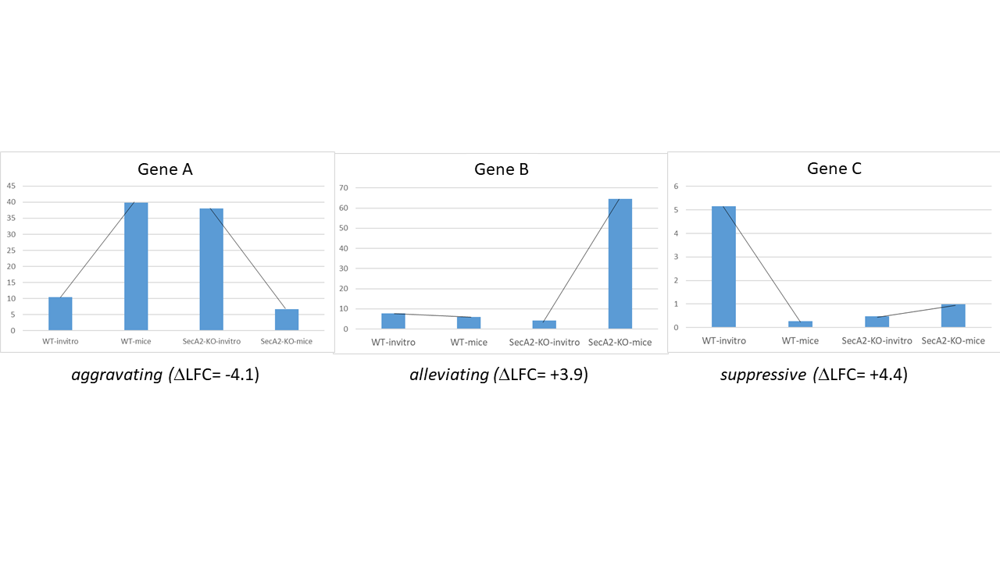

Genetic Interactions
The genetic interactions (GI) method is a comparative analysis used used to determine genetic interactions. It is a Bayesian method that estimates the distribution of log fold-changes (logFC) in two strain backgrounds under different conditions, and identifies significantly large changes in enrichment (delta_logFC) to identify those genes that imply a genetic interaction.
Note
Can be used for both Himar1 and Tn5 datasets
How does it work?
GI performs a comparison among 4 groups of datasets, strain A and B assessed in conditions 1 and 2 (e.g. control vs treatment). It looks for interactions where the response to the treatment (i.e. effect on insertion counts) depends on the strain.
If you think of the effect of treatment as a log-fold-change (e.g. of the insert counts between control and treatment in strain A), which is like a “slope”, then the interacting genes are those that exhibit a difference in the effect of the treatment between the strains, and hence a difference in the slopes between strain A and B (represented by ‘delta_LFC’ in the output file).
Statistical Significance
The computation that is done by GI is to compute the posterior distribution of the delta_LFC (or mean change in slopes) through Bayesian sampling. The primary method to determine significance of genes is whethter this the mean_delta_LFC is significantly differnt than 0. However, since the mean_delta_LFC is a distribution, we represent it by a Highest Density Interval, HDI, which is similar to a 95% confidence interval. Furthermore, rather than asking whether the HDI overlaps 0 exactly, we expand the interval around 0 to a Region of Probable Equivalence (ROPE), which is set to [-0.5,0.5] by default. Hence the significant genes are those for which the HDI does not overlap the ROPE. GI has a flag to adjust the size of the ROPE, if desired.
In the GI output file, the final column give the significance call, along with type of interaction. If a gene is not significant, it will be marked with “No Interaction” (for the HDI method, meaning HDI overlaps the ROPE). If a gene IS significant, then its interaction will be cateogrized in 3 types (see NAR paper):

Aggravating - mean_delta_LFC is negative; gene is more required in treatment than control in the B strain, compared to the A strain
Suppressive - mean_delta_LFC is positive, and the gene was not conditionally essential in strain A (flat slope), but becomes conditionally non-essential in strain B when treated (positive slope)
Alleviating - mean_delta_LFC is positive, but the conditional requirement (negative slope) of the gene in strain A with treatment is “cancelled” by the modification in strain B
A limitation of this HDI approach is that it is discrete (i.e. overlap is either True or False), but does not provide a quantitative metric for the degree of overlap. Thus a second method for assessing significance of genetic interactions is to compute the probability of overlap. The lower the probability, the more differnt the delta_LFC is from 0, indicating a more significant interaction. In this case, genes with prob < 0.05 are considered interactions and classified by the 3 types above, while genes with prob >= 0.05 are marked as “No Interaction”.
In addition, since we are calculating significance for thousands of genes in parallel, many researchers prefer to have some method for correcting for multiple tests, to control the false discovery rate. However, FDR correction is generally used only for frequentist analyses, and he GI method is fundamentally a Bayesian approach. Technically, in a Bayesian framework, FDR correction is not needed. Any adjustment for expectations about number of hits would be achieved through adjusting parameters for prior distributions. Nonetheless, GI includes options for two methods that approximate FDR correction: BFDR (Bayesian False Discovery Rate correction, Newton M.A., Noueiry A., Sarkar D., Ahlquist P. (2004). Detecting differential gene expression with a semiparametric hierarchical mixture method. Biostatistics, 5:155–176.) and FWER (Familty-Wise Error Rate control). When these corrections are applied, a threshold of 0.05 for the adjusted probability of overlap is used for each, and this determines which genes are classified as interacting (1 of 3 types) or marked as “No Interaction”, as above.
In order to enable users to evaluate these various methods for determining significance of interactions, a ‘-signif’ flag is provided for the GI method. The options are:
-signif HDI: significant genes are those for which the HDI does not overlap the ROPE
-signif prob: significant genes are those with prob < 0.05, where ‘prob’ is probability that HDI overlaps the ROPE (default)
-signif BFDR: significant genes are those with adjusted prob < 0.05, where prob is adjusted by the BFDR method
-signif FWER: significant genes are those with adjusted prob < 0.05, where prob is adjusted by the FWER method
‘-signif prob’ is the default method.
In the output file, the genes are sorted by the probability that the HDI overlaps the ROPE. The genes at the top are rougly the genes with the highest absolute value of mean_delta_LFC.
Usage
python3 /pacific/home/ioerger/transit/src/transit.py GI <wigs_for_strA_cond1> <wigs_for_strA_cond2> <wigs_for_strB_cond1> <wigs_for_strB_cond2> <annotation .prot_table or GFF3> <output file> [Optional Arguments]
GI performs a comparison among 4 groups of datasets, strain A and B assessed in conditions 1 and 2 (e.g. control vs treatment).
It looks for interactions where the response to the treatment (i.e. effect on insertion counts) depends on the strain (output variable: delta_LFC).
Provide replicates in each group as a comma-separated list of wig files.
HDI is highest density interval for posterior distribution of delta_LFC, which is like a confidence interval on difference of slopes.
Genes are sorted by probability of HDI overlapping with ROPE. (genes with the highest abs(mean_delta_logFC) are near the top, approximately)
Significant genes are indicated by 'Type of Interaction' column (No Interaction, Aggravating, Alleviating, Suppressive).
By default, hits are defined as "Is HDI outside of ROPE?"=TRUE (i.e. non-overlap of delta_LFC posterior distritbuion with Region of Probably Equivalence around 0)
Alternative methods for significance: use -signif flag with prob, BFDR, or FWER. These affect 'Type of Interaction' (i.e. which genes are labeled 'No Interaction')
Optional Arguments:
-s <integer> := Number of samples. Default: -s 10000
--rope <float> := Region of Practical Equivalence. Area around 0 (i.e. 0 +/- ROPE) that is NOT of interest. Can be thought of similar to the area of the null-hypothesis. Default: --rope 0.5
-n <string> := Normalization method. Default: -n TTR
-iz := Include rows with zero across conditions.
-l := Perform LOESS Correction; Helps remove possible genomic position bias. Default: Turned Off.
-iN <float> := Ignore TAs occuring at given percentage (as integer) of the N terminus. Default: -iN 0
-iC <float> := Ignore TAs occuring at given percentage (as integer) of the C terminus. Default: -iC 0
-signif HDI := (default) Significant if HDI does not overlap ROPE; if HDI overlaps ROPE, 'Type of Interaction' is set to 'No Interaction'
-signif prob := Optionally, significant hits are re-defined based on probability (degree) of overlap of HDI with ROPE, prob<0.05 (no adjustment)
-signif BFDR := Apply "Bayesian" FDR correction (see doc) to adjust HDI-ROPE overlap probabilities so that significant hits are re-defined as BFDR<0.05
-signif FWER := Apply "Bayesian" FWER correction (see doc) to adjust HDI-ROPE overlap probabilities so that significant hits are re-defined as FWER<0.05
Example
In this example, the effect of a knockout of SigB is being evaluated for its effect on tolerance of isoniazid. Some genes may become more essential (or less) in the presence of INH in the wild-type strain. The genes implied to interact with SigB are those whose response to INH changes in the knock-out strain compared to the wild-type. Note there are 2 replicates in each of the 4 groups of datasets.
python3 transit/src/transit.py GI WT_untreated1.wig,WT_untreated2.wig WT_INH_1.wig,WT_INH_2.wig delta_SigB_untreated1.wig,delta_SigB_untreated2.wig delta_SigB_INH_1.wig,delta_SigB_INH_2.wig mc2_155_tamu.prot_table GI_delta_SigB_INH.txt
Parameters
The resampling method is non-parametric, and therefore does not require any parameters governing the distributions or the model. The following parameters are available for the method:
Samples: The number of samples (permutations) to perform. The larger the number of samples, the more resolution the p-values calculated will have, at the expense of longer computation time. The resampling method runs on 10,000 samples by default.
ROPE: Region of Practical Equivalence. This region defines an area around 0.0 that represents differences in the log fold-change that are practically equivalent to zero. This aids in ignoring spurious changes in the logFC that would otherwise be identified under a strict null-hypothesis of no difference.
Include Zeros: Select to include sites that are zero. This is the preferred behavior, however, unselecting this (thus ignoring sites that) are zero accross all dataset (i.e. completely empty), is useful for decreasing running time (specially for large datasets like Tn5).
Normalization Method: Determines which normalization method to use when comparing datasets. Proper normalization is important as it ensures that other sources of variability are not mistakenly treated as real differences. See the Normalization section for a description of normalization method available in TRANSIT.
Significance Method:
-signif HDI: significant genes are those for which the HDI does not overlap the ROPE
-signif prob: significant genes are those with prob < 0.05, where ‘prob’ is porbability that HDI overlap the ROPE (default)
-signif BFDR: significant genes are those with adjusted prob < 0.05, where prob is adjusted by the BFDR method
-signif FWER: significant genes are those with adjusted prob < 0.05, where prob is adjusted by the FWER method
Output and Diagnostics
The GI method outputs a tab-delimited file with results for each gene in the genome. All genes are sorted by significance using the probability that the HDI overlaps the ROPE. Significant genes are those NOT marked with ‘No Interaction’ in the last column.
Column Header |
Column Definition |
|---|---|
Orf |
Gene ID. |
Name |
Name of the gene. |
Number of TA Sites |
Number of TA sites in the gene. |
Mean count (Strain A Condition 1) |
Mean read count in strain A, condition 1 |
Mean count (Strain A Condition 2) |
Mean read count in strain A, condition 2 |
Mean count (Strain B Condition 1) |
Mean read count in strain B, condition 1 |
Mean count (Strain B Condition 2) |
Mean read count in strain B, condition 2 |
Mean logFC (Strain A) |
The log2 fold-change in read-count for strain A |
Mean logFC (Strain B) |
The log2 fold-change in read-count for strain B |
Mean delta logFC |
The difference in log2 fold-change between B and A |
Lower Bound delta logFC |
Lower bound of the difference (delta logFC) |
Upper Bound delta logFC |
Upper bound of the difference (delta logFC) |
Prob. of delta-logFC being within ROPE |
Portion of the delta-logFC within ROPE |
Adjusted Probability (BFDR) |
Posterior probability adjusted for comparisons |
Is HDI outside ROPE? |
True/False whether the delta-logFC overlaps ROPE |
Type of Interaction |
Final classification. |